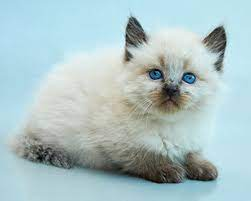

|  |
| Balinese |
BEHAVIOR
The Balinese is generally a very active, intelligent, affectionate and particularly social, medium-sized cat. They enjoy playing and are very curious, so it is important that you have lots of toys, scratching posts and enrichment ideas ready to keep them entertained and stimulated.
Their clever personalities mean that they can be trained more easily than many other breeds using positive reinforcement methods. While they are smart and very graceful, they are still sometimes referred to as clowns because of their goofy and fun antics.
They also crave company. They are not a cat that would suit being left alone for long periods at a time, and this could result in them becoming distressed and possibly exhibiting destructive behavior. With proper introductions, they are a breed that can live well alongside children, dogs, and other pets. They are often a popular choice as a family cat.
GROOMING
Balinese require very little grooming, but might benefit from a wipe-down with a damp cloth occasionally. Also, as with any longer-hair cat, keep a close eye out for mats or tangles which can be painful for your cat if not removed.
HEALTH PROBLEMS
While they are generally a healthy breed, the Balinese can develop some of the same hereditary conditions as the Siamese. A good breeder will do rigorous health checks to minimize any problems developing.
Some of the conditions they can be prone to include:
- Eye problems (Progressive Retinal Atrophy is one of the most common health conditions seen in Balinese. They can also be prone to being cross-eyed (although this has mostly been bred out) and developing Glaucoma)
- Liver Amyloidosis (this involves amyloid proteins being deposited in the liver, and this reduces function and can lead to liver failure)
- Respiratory issues (most commonly asthma or bronchial disease/infections)
- Neurological problems (Hyperesthesia syndrome which causes excessive grooming and licking, and Nystagmus which results in rapid eye movement)
- Heart problems (including Dilated Cardiomyopathy)
NUTRITION
Balinese, like any cat, should be fed a high-quality diet that is appropriately portion-controlled to avoid any weight-related health problems. They are known for being picky eaters so you may find they are more inclined to eat a wet diet than dry kibble. If they are on a wet diet, they may need a more regular dental hygiene regime to prevent them from developing gum disease.